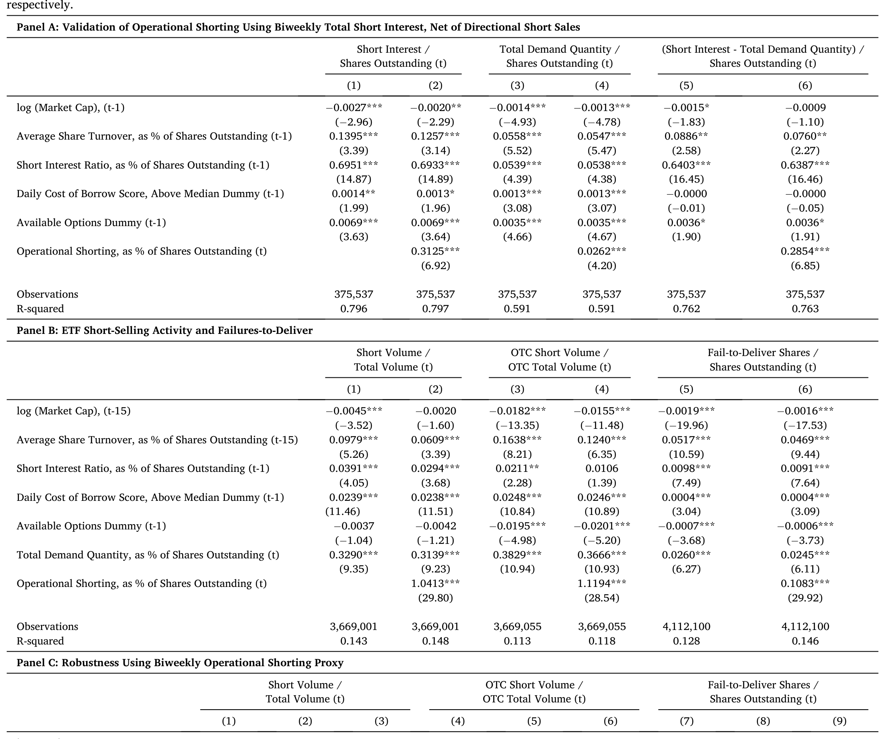
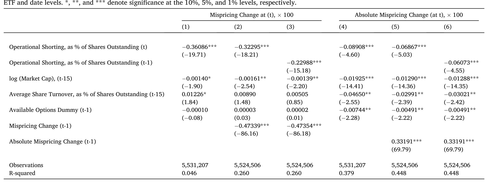
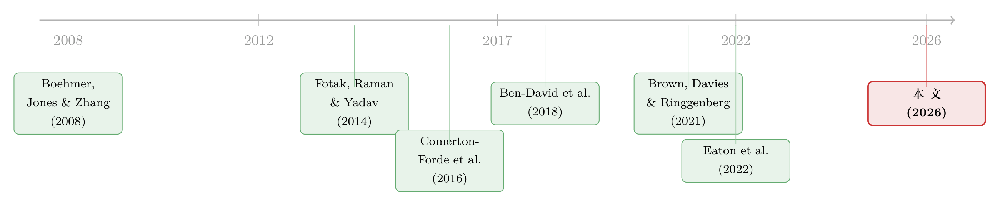

高得反常的 ETF 卖空：到底是违规，还是流动性的另一副面孔？
本文读的是 Evans, Moussawi, Pagano & Sedunov (2026, Journal of Financial Economics)：ETF 那些高得离谱的卖空利率和失败交割，绝大部分并不是「裸卖空」滥用，而是做市商在用一种被作者命名为「操作性卖空 (operational shorting)」的方式提供流动性——它占了 ETF 卖空的约 64%，能预测 ETF 市场价格的短期反转，却对标的资产价值毫无预测力。
1 一个让监管者睡不着觉的反常现象
先抛一个让人不太舒服的事实：在美国所有证券的「失败交割 (failure-to-deliver, FTD)」里，ETF 这一类只占了全市场很小的市值份额，却长期贡献了 超过 60% 的按金额加权的失败交割。卖空利率也是一样——很多 ETF 的卖空利率高得离谱，有的甚至超过其流通在外份额的 100%。
如果你是监管者，看到这组数字，第一反应几乎一定是：有人在违规。事实上监管者真的这么想过。FINRA 和 Nasdaq 在 2016 年就曾因为「裸卖空 (naked short selling)」的 ETF 赎回指令，处罚过一家叫 Wedbush 的授权参与人 (authorized participant, AP)；围绕 ETF 的「裸空头」，市场上一直有「这是不是一种系统性滥用」的疑虑。
但故事真要是这么简单，就不值得写一篇 JFE 了。作者要讲的，恰恰是一个反转：这些高得反常的卖空和失败交割，绝大多数不是滥用，而是 ETF 这种证券独特的流动性提供机制留下的脚印。 而且——这是全文最有意思的一句话——2019 年 Jane Street（全球最大的 ETF 做市商之一）在给投资者的信里，直接引用了这篇论文的发现，承认「做市商并不总是立刻创设新的 ETF 份额来交割一笔卖空……Reg SHO 豁免很可能正是高卖空利率和高失败交割率的原因」。被研究对象主动跑出来背书，这在实证金融里相当罕见。
2 谜题的核心：那「丢失」的 86 美分去哪了？
要理解这篇论文，得先理解 ETF 和普通股票的根本区别。普通股票只能买卖，而 ETF 还能申购与赎回 (creation/redemption)：AP 可以拿一篮子标的证券去换一批新的 ETF 份额，或者反过来。学界几乎所有关于 ETF 的文献，都把注意力放在这个「申赎套利」上。
可是有一个数字会立刻打乱这套叙事。投资公司协会 (ICI) 估计：每 1.00 美元的 ETF 交易，最终只对应 0.14 美元的申赎活动，剩下的 0.86 美元全都发生在二级市场里。
于是一个自然的问题是：既然绝大部分 ETF 的流动性提供并没有走「换篮子、创设份额」这条路，那做市商到底是怎么吸收掉投资者那些突然涌来的买盘的？
答案藏在结算的时间差里。当二级市场出现一股买入失衡（买单远多于卖单），ETF 的市场价格被推高，相对其净值 (net asset value, NAV) 出现套利空间。教科书式的做法是：AP 一边卖出更贵的 ETF 份额，一边在日内按 NAV 买入标的篮子，收盘时把篮子换成 ETF 份额交割。但真正关键的一步在于：卖出 ETF 份额和买入/创设篮子这两条腿，并不是同时发生的。 AP 完全可以先把 ETF 份额卖给投资者，却推迟创设和交割——SEC Rule 204 给「善意做市 (bona fide market making)」开了豁免，允许它们比标准清算时间再多拖三个交易日。
换句话说，AP 手里握着一个期权：先卖空 ETF 份额，然后在结算时「失败交割」。 在这段时间窗里，它对这些份额是空头——但这个空头不是冲着「我认为这只 ETF 要跌」去的，而纯粹是为了即时满足买盘、提供流动性。作者把这种空头叫做操作性卖空 (operational shorting)，用来和传统的、带着方向性判断的定向卖空 (directional shorting) 区分开。
3 怎么把这只「看不见的空头」量出来？
光有概念还不够，论文真正的贡献是把它测出来。这个度量的巧妙之处，在于它只用两个都能观测到的量做差：
- 一是 ETF 的带符号买卖失衡 (signed buy-sell trade imbalance)，用日内逐笔成交、按 Lee-Ready 算法定方向加总而来，代理投资者净买入了多少份额；
- 二是 ETF 每日流通份额的变化 (change in shares outstanding)，代理 AP 当期真正创设/赎回了多少份额。
如果某一刻投资者在净买入（买卖失衡为正），但当期并没有相应的份额被创设出来，那这部分缺口，就只能是 AP 在「先斩后奏」——卖出了它还没创设、还没交割的份额。把这个逻辑写成最朴素的形式：
$$ OS_t = \max\big(0,\; TI_t - \Delta SHROUT_t\big) $$
这里 \(TI_t\) 是带符号买卖失衡，\(\Delta SHROUT_t\) 是流通份额变化，\(OS_t\) 就是操作性卖空。max(0, ·) 这一层很重要：它意味着这个度量只在「确有超额买入需求、且这部分需求大于当期被创设的份额」时才会被点亮。这是一个相当保守的口径——它不会把任何普通的卖空也算进来，只抓住「需求溢出、份额没跟上」的那一截。正因为保守，后面它依然能解释掉那么多卖空和失败交割，才显得格外有说服力。
注意这个度量的「指纹」属性：它依赖的全是公开可得的高频成交数据和份额数据，不需要任何私有的做市商台账。这也是为什么它能被推广到几乎所有 ETF、并被业界（比如 Jane Street）直接对号入座。
4 三重验证：它真的是在抓「做市」吗？
提出一个新度量是容易的，难的是证明它测的就是你说的那个东西。作者做了三件事。
首先，是和卖空、失败交割对账。 用 Markit Securities Finance 数据库里 ETF 份额的总借券需求量作为定向卖空的代理，把它从总卖空里减掉，剩下的「超额卖空」就应该对应操作性卖空。结果是：操作性卖空占了 ETF 整体卖空利率的约三分之二（64%）；而且在控制了定向卖空之后，操作性卖空仍然是 ETF 双周卖空利率和日度卖空量在统计与经济意义上最重要的决定因素。更关键的一步是和失败交割对账：因为 SEC 实际上禁止了定向卖空的失败交割、却给操作性卖空开了 Rule 204 的口子，所以「如果我这个度量抓的真是操作性卖空，它就该和 FTD 强相关」——数据正是这样，操作性卖空在所有候选变量里与 ETF 失败交割的统计关系最强（如表 2）。

Table 2
接着，一个自然的问题是：真的是 AP 和做市商在干这件事吗？ 作者用 FINRA 的周度场外 (OTC) 交易数据，按每只 ETF 找出其主导做市商 (lead market maker, LMM) 和主要 AP，看它们的交易量。结论很干净：当某只 ETF 的操作性卖空上升，它的主导做市商和主要 AP 的场外交易同步放大，而其他交易公司则在收缩。这把「操作性卖空」和「持牌做市商的流动性供给」直接钉在了一起。
然后，是动机层面的验证。 既然 Rule 203(b) 和 204 的豁免本就是为流动性提供而设，那如果操作性卖空真在干这活，它就应该和「无知情交易」绑在一起。作者沿用 Barber et al. (2024) 的方法构造了日度散户 ETF 成交 (retail volume) 代理——散户交易在文献里被反复证明是无知情的——发现 AP/做市商在散户交易增多时显著更倾向于操作性卖空。进一步看，操作性卖空主要由两件事驱动：(1) ETF 与其标的篮子之间更大的流动性错配 (liquidity mismatch)；(2) 存在高效的对冲工具。这恰好解释了「AP 为什么宁愿先欠着、推迟去组装那个昂贵的篮子」——当标的越不好买、对冲越方便时，先卖空、晚创设就越划算。
5 反转：它能预测价格，却看不懂价值
走到这里，最漂亮的结果出现了。
一长串关于个股卖空的文献告诉我们：空头是知情的，卖空能预测未来收益的下跌。那操作性卖空呢？作者把 ETF 收益拆成两个口径——基于市场价格的收益，和基于 NAV（即标的证券）的收益——分别看预测力。
结论是一对镜像：操作性卖空显著负向预测 ETF 的市场价格收益（即随后会反转），而且这个效果在统计和经济意义上都比 Brown et al. (2021) 强调的 ETF 申购活动本身更强；但它对 NAV 收益完全没有预测力（如表 5）。

Table 5
这一正一反合在一起，讲的是同一个故事：AP 观察到的是「无知情的散户需求把 ETF 市价短暂推离基本面」，于是它一边操作性卖空吸收掉这股需求、一边等着价格反转赚取这个价差；但因为这股需求本身不含任何关于标的价值的信息，所以它的卖空对 NAV 自然就没有预测力。这和个股那种「知情空头」是截然相反的两种东西。
更细的证据是：这种「市价反转、NAV 无感」的负向预测，主要由非股票类 ETF 和「高流动性错配」的股票类 ETF（即 ETF 远比其标的更好交易）驱动——这正是流动性提供动机最强的地方。
顺着这条线还能解释两件早被研究过的事：
- 错误定价/跟踪误差。 除了滞后的错误定价本身，操作性卖空是所有变量里最强的、让 ETF 错误定价收窄的预测因子。结合前面的价格反转，这个「错误定价收窄」本质上就是 AP 提供流动性所赚到的利润。
- 标的证券的流动性。 文献（如 Ben-David et al., 2018）发现 ETF 持有会推高标的的日内价差和波动。本文确认了这一点，但补上了关键的另一半：操作性卖空与标的篮子的价差和波动负相关，扮演了一个「泄压阀 (release valve)」——AP 先在 ETF 这一层用操作性卖空吸收掉突发买盘，从而推迟、甚至避免了把这股冲击传导到标的股票市场。换句话说，操作性卖空像一个缓冲垫，削弱了 ETF 流动性冲击向标的的传导。（关于做市商如何在风险约束下提供流动性这一更一般的问题，可参见《无风险市场里的风险厌恶：是谁给做市商系上了「风险限额」这根绳》。）
6 用两次「外生断电」给因果上保险
到这里，一个挑剔的读者会问：你这些相关关系，会不会都是内生的——比如某些 ETF 天生就既流动性好、又卖空多？作者的回应是找两个外生的负向冲击，看「操作性卖空的缓冲作用」会不会随之减弱。
第一个冲击是散户券商宕机 (retail brokerage outage)，沿用 Eaton et al. (2022)：当 Robinhood 这类平台突然瘫痪，散户买盘骤减，AP 用操作性卖空提供流动性的激励也随之下降。第二个冲击是主导做市商更替 (lead market maker change)，沿用 Hong et al. (2023)：换 LMM 意味着 AP 提供流动性的意愿被打断。
两个冲击下的结果一致而干净：ETF 持有对标的流动性的负面影响依然在，但操作性卖空那个「泄压」作用明显减弱了。 这正是「如果操作性卖空真是流动性提供的产物，那么在提供流动性的激励被外生压低时，它的缓冲就该消失」所预言的——从而让人更难用「某种隐藏的内生力量」来解释全文结果。
7 文献脉络
把这篇论文放回它所在的谱系里看，会更清楚它补了哪一块。
卖空研究的主线长期被「知情」二字主导：从 Boehmer, Jones & Zhang (2008) 区分不同来源空头的信息含量，到 Rapach, Ringgenberg & Zhou (2016) 发现卖空利率能预测总量股票收益、印证了卖空的方向性动机——这条线讲的都是「空头懂得多」。但与此并行，另一条支线一直在强调卖空的流动性供给面：Comerton-Forde, Jones & Putniņš (2016) 把卖空明确拆成「需求流动性」和「供给流动性」两类，Fotak, Raman & Yadav (2014) 则指出失败交割与卖空其实改善了市场质量。

ETF 这一侧，早期文献（Elton et al., 2002 等）盯着跟踪误差，后来 Ben-David, Franzoni & Moussawi (2018) 把矛头指向「ETF 是否放大了标的波动」，Box et al. (2021) 细究 ETF 与标的之间的日内套利，Brown, Davies & Ringgenberg (2021) 则发现 ETF 申赎流量能预测收益、并解释为 AP 在迎合非基本面需求。本文恰好站在这两条线的交汇处：它接过 Comerton-Forde 等人的「流动性供给型卖空」概念，把它落到 ETF 这种独特结构上，第一次把那部分「看不见的、用失败交割实现的做市空头」单独量化出来，并指出：凡是涉及 ETF 卖空或套利的研究，都必须把操作性卖空单独剥离出来——它甚至常常是比申赎活动更强的那个预测变量。同一作者群随后的 Evans et al. (2025) 还把这套 ETF 卖空逻辑延伸到了股东投票上。
8 评论与延伸（Q&A + 研究方向）
(a) 几个可能的疑问
Q：操作性卖空和「裸卖空 (naked shorting)」到底有什么区别？
形式上都是「卖出还没到手的份额」，但动机和合法性完全不同。裸卖空是无意/无能力交割的违规行为；操作性卖空是 AP 在 Rule 203(b)/204 的善意做市豁免下，为即时满足买盘而合法推迟创设与交割。本文的整篇证据（与散户无知情需求同向、对 NAV 无预测力、随做市激励外生下降而减弱）都指向后者，而非滥用。
Q：用 Markit 的总借券需求量当「定向卖空」的代理，可靠吗？
这是全文一个关键假设。借券通常服务于真正的方向性空头，所以「总卖空减去借券需求」剩下的部分，被解释为不需要借券、靠豁免实现的操作性卖空，逻辑是自洽的。但借券需求并不能完美等同于全部定向卖空（比如有些方向性空头也可能走别的渠道），这会给度量带来噪声——好在作者用 FTD、OTC 交易、散户需求等多重独立验证互相印证，缓解了单一代理的担忧。
Q：既能预测市场价格、又对 NAV 毫无预测力，这不矛盾吗？
恰恰不矛盾，这正是论文的「身份证」。它说明操作性卖空抓的是「无知情需求造成的暂时价格压力」：市价被散户买盘短暂推离基本面，所以会反转（可预测）；而这股需求不含标的价值信息，所以 NAV 不动（不可预测）。这与个股「知情空头能预测基本面下跌」是镜像关系。
Q：失败交割高，难道真的是好事？会不会掩盖了真正的滥用？
作者并不是说所有 FTD 都无害，而是说总量上ETF 的高 FTD 主要由操作性卖空（即合法做市）驱动，而非系统性滥用。这与 Jain & Jain (2015) 在普通股上的发现形成对比。但这是一个总量判断，并不排除个案违规（论文也提到 Wedbush/Scout 的处罚），监管层面仍需区分「做市豁免的正常使用」和「打着做市旗号的滥用」。
Q：「泄压阀」结论是否和 Ben-David et al. (2018)「ETF 放大波动」相冲突？
不冲突，而是补充。本文确认了 ETF 持有确实推高标的价差与波动这一基线；它增加的是：在这条传导链上，操作性卖空起的是缓冲作用，把一部分突发冲击吸收在 ETF 层面、推迟其向标的传导。两者描述的是同一系统里方向相反的两股力量。
Q：散户成交代理是 Barber et al. (2024) 那套，它能稳健地分辨「散户」吗？
这套方法靠成交的次美分价格改善等微观结构特征来识别散户单，是目前文献里被广泛接受的代理，但本质仍是推断而非标签，存在误分类。论文用它得到的结论（操作性卖空随散户活跃而增加）方向明确，又和宕机这一外生冲击的结果相互印证，所以即使代理有噪声，主结论也较稳。
(b) 几个可能的研究问题与提案
1. 公司债 ETF 的操作性卖空与标的债券流动性
【经济故事】公司债 ETF 是「流动性错配」最极端的样本——ETF 本身在交易所秒级成交，标的债券却可能几天不交易。本文预测：错配越大，操作性卖空作为「泄压阀」的作用越强。那么在 2020 年 3 月债券 ETF 大幅折价、流动性枯竭那段时间，操作性卖空究竟是缓冲了、还是放大了标的债券市场的压力？ 【可行性】中。所需数据可得（ETF 高频成交 + 份额变化 + TRACE 债券成交），识别可借助 COVID 这一外生流动性冲击做事件研究；难点在债券侧成交稀疏、定向卖空代理更难构造。
2. 外资持有人与跨境/ADR 篮子 ETF 的操作性卖空
【经济故事】当 ETF 的标的是海外证券或 ADR、存在时区错位与交易时段不重叠时，AP 在本地时段几乎无法即时组装篮子，操作性卖空理应成为主导的流动性提供方式。这能把「操作性卖空随流动性错配上升」的机制推到极致，并联系到外资持有人在跨境流动性供给中的角色。 【可行性】中低。需要识别跨境 ETF 及其 ADR/海外标的的交易时段，定向卖空与借券数据在跨境样本上覆盖较差，是主要障碍。
3. 把操作性卖空当作 ETF 层面的「流动性供给强度」指标，去解释危机传染
【经济故事】既然操作性卖空缓冲了冲击向标的的传导，那么在系统性压力期，操作性卖空能力被耗尽（做市商风险限额触顶）的那些 ETF，是否更可能把冲击「漏」给标的、引发踩踏？这把本文的横截面机制接到了系统性风险上。 【可行性】中。可用本文度量构造时序强度指标，识别可借 LMM 更替或做市商资本约束变化作为外生冲击；难点是分离「能力耗尽」与「需求消失」。
4. 失败交割豁免的政策实验
【经济故事】若监管收紧 Rule 204 对 ETF 失败交割的容忍度，按本文逻辑，操作性卖空这条流动性供给渠道会收窄，标的市场反而可能承受更多直接冲击。这是一个干净的、有政策含义的反事实。 【可行性】中。理想需要一次规则变更作为断点；在没有现成自然实验时，可退而用监管关注度（执法行动密度）的时序变化做较弱的识别。
9 我的判断
这篇论文最大的贡献，是把一个长期被当成「监管异常」的现象，重新解释成一个可测量、可验证、且有清晰经济动机的流动性供给机制——并且给出了一个只靠公开数据就能复制的度量。它的说服力不在某一个回归，而在于度量被从五个互相独立的角度反复对账（卖空利率、失败交割、做市商 OTC 交易、散户需求、价格反转 vs NAV），每一个角度单独看都可能被质疑，合在一起就很难用别的故事解释。被 Jane Street 主动对号入座，更是给了它一份难得的外部效度。
要说担忧，主要在度量的「定向 vs 操作」这条分界线上：它高度依赖「借券需求 ≈ 定向卖空」这个假设，而这条线本身是有噪声的，两类卖空在边界上也并非互斥。max(0, ·) 的保守口径虽然减少了误报，却也可能系统性地低估了操作性卖空（漏掉那些需求和创设大致同步、却仍属做市的情形），从而让 64% 这个数字更像下界而非点估计。此外，两个外生冲击（宕机、LMM 更替）很好地排除了内生性，但它们都是负向冲击，我更想看到一个正向的、提高做市激励的外生事件来对称地验证机制。
下一步我最想看到的，是把这套度量搬到公司债 ETF上去：那里流动性错配最极端、标的最不透明、危机期间最容易出事，恰恰是「泄压阀」机制最该大显身手、也最该被压力测试的地方。如果操作性卖空在债券 ETF 上同样扮演缓冲，那它对理解 2020 年那场债券 ETF 折价风波，可能会有相当不一样的启示。
参考文献
- Barber, B. M., Huang, X., Jorion, P., Odean, T., & Schwarz, C. (2024). A (sub)penny for your thoughts: Tracking retail investor activity in TAQ. Journal of Finance (working/forthcoming).
- Ben-David, I., Franzoni, F., & Moussawi, R. (2018). Do ETFs increase volatility? Journal of Finance 73(6), 2471–2535.
- Boehmer, E., Jones, C., & Zhang, X. (2008). Which shorts are informed? Journal of Finance 63(2), 491–527.
- Box, T., Davis, R., Evans, R., & Lynch, A. (2021). Intraday arbitrage between ETFs and their underlying portfolios. Journal of Financial Economics 141(3), 1078–1095.
- Brown, D., Davies, S., & Ringgenberg, M. (2021). ETF arbitrage and return predictability. Review of Finance 25(4), 937–972.
- Comerton-Forde, C., Jones, C., & Putniņš, T. (2016). Shorting at close range: A tale of two types. Journal of Financial Economics 121(3), 546–568.
- Eaton, G., Green, T. C., Roseman, B., & Wu, Y. (2022). Retail trader sophistication and stock market quality: Evidence from brokerage outages. Journal of Financial Economics 146(2), 502–528.
- Evans, R., Karakaş, O., Moussawi, R., & Young, M. (2025). Phantom of the opera: ETF shorting and shareholder voting. Management Science (forthcoming).
- Fotak, V., Raman, V., & Yadav, P. (2014). Fails-to-deliver, short selling, and market quality. Journal of Financial Economics 114(3), 493–516.
- Hong, C., Li, F. W., Luo, J., & Subrahmanyam, A. (2023). Financial intermediaries and comovement in market efficiency: The case of ETFs. Working paper.
- Jain, A., & Jain, C. (2015). Fails-to-deliver before and after the implementation of Rule 203 and Rule 204. Financial Review 50(4), 611–636.
- Lee, C., & Ready, M. (1991). Inferring trade direction from intraday data. Journal of Finance 46(2), 733–746.
- Rapach, D., Ringgenberg, M., & Zhou, G. (2016). Short interest and aggregate stock returns. Journal of Financial Economics 121(1), 46–65.